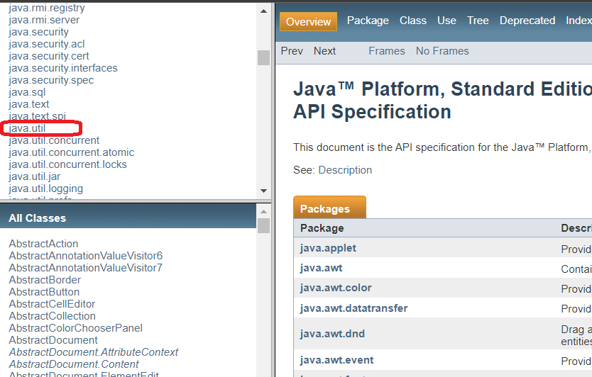
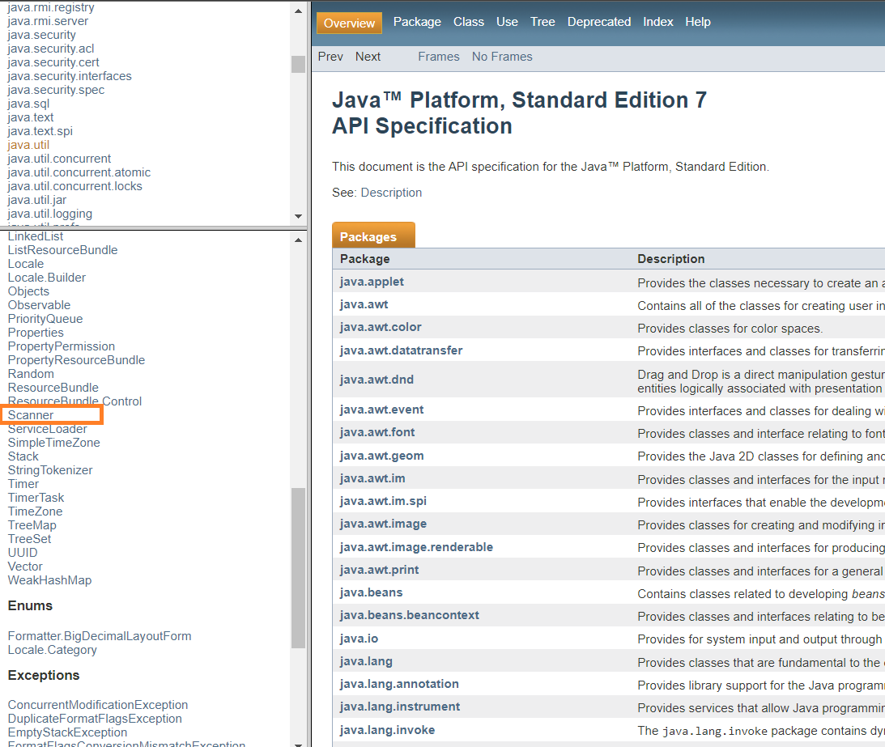
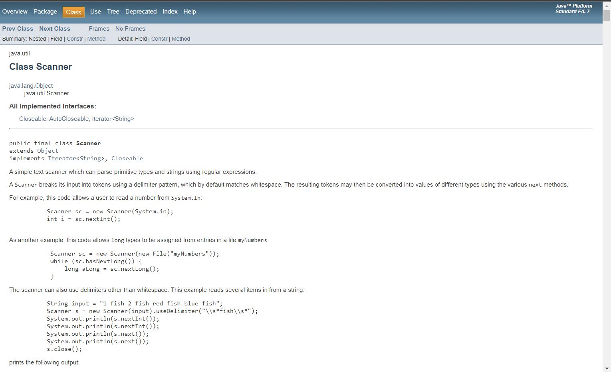
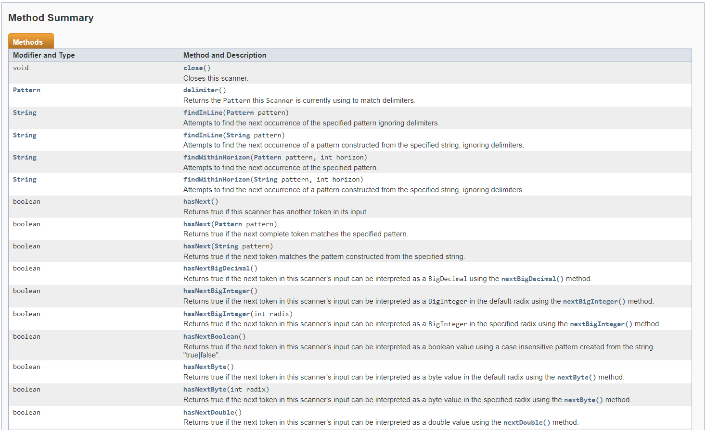

Nociones Básicas
Algoritmos
Un algoritmo es un procedimiento (método) para resolver problemas. Este procedimiento puede ser matemático o lógico. El método permite dividir el problema en una serie de pasos sencillos.
Características de un algoritmo
- Preciso: esto es debido a que se indica el orden en que se debe realizar cada paso del algoritmo.
- Definido: esto es debido a que si el algoritmo se sigue dos veces, se obtendrá el mismo resultado siempre.
- Finito: esto es debido a que el algoritmo debe poder terminar en algún momento.
Lenguajes Algorítmicos
- Gráficos: Es la representación gráfica de las operaciones que realiza un algoritmo (diagrama de flujo).
- No Gráficos:Representa en forma descriptiva las operaciones que debe realizar un algoritmo (pseudocódigo).
Diagramas de flujo
Un diagrama de flujo es un diagrama que describe un proceso, sistema o algoritmo informático. Se usan ampliamente en numerosos campos para documentar, estudiar, planificar, mejorar y comunicar procesos que suelen ser complejos en diagramas claros y fáciles de comprender.

Pseudocodigo
El pseudocódigo es una forma de expresar los distintos pasos que va a realizar un programa, de la forma más parecida a un lenguaje de programación. Su principal función es la de representar por pasos la solución a un problema o algoritmo, de la forma más detallada posible, utilizando un lenguaje cercano al de programación. El pseudocódigo no puede ejecutarse en un ordenador ya que entonces dejaría de ser pseudocódigo, como su propio nombre indica, se trata de un código falso (pseudo = falso), es un código escrito para que lo entienda el ser humano y no la máquina

Sintaxis basica en JAVA
Identificadores: Un identificador es un nombre que identifica a una variable, a un método o función miembro, a una clase. Todos los lenguajes tienen ciertas reglas para componer los identificadores: Identificadores: Un identificador es un nombre que identifica a una variable, a un método o Todos los identificadores han de comenzar con una letra, el carácter subrayado ( _ ) o el carácter dólar ( $=).
- Puede incluir, pero no comenzar por un número.
- No puede incluir el carácter espacio en blanco.
- Distingue entre letras mayúsculas y minúsculas.
- No se pueden utilizar las palabras reservadas como identificadores.
Operadores de incermento y decremento
Java tiene un operador que permite abreviar la tan necesaria instrucción de incrementar o decrementar una variable en 1, y es a través del uso de los operadores ++ (para incrementar) y — (para decrementar).


Operadores Relacionales
Los operadores relacionales son símbolos que se usan para comparar dos valores. Si el resultado de la comparación es correcto la expresión considerada es verdadera, en caso contrario es falsa.

Operadores Logicos
Son los operadores que funcionan con valores booleanos; los valores son verdaderos o falsos.

Variables y constantes
Los datos procesados en el programa toman dos formas comunes: constantes y variables. Constante se refiere a los datos cuyo valor no puede cambiar durante la ejecución del programa, mientras que el valor de la variable puede cambiar y representa la unidad de almacenamiento básica en un programa Java. Cualquier dato en el programa pertenece a un tipo específico, y el tipo determina su representación, rango de valores y operaciones disponibles. Los diferentes tipos de constantes tienen diferentes métodos de representación, y las variables también deben indicar su tipo antes de su uso.
Constantes
En Java, se utiliza la palabra clave final para indicar que una variable debe comportarse como si fuese constante, significando con esto que no se permite su modificación una vez que haya sido declarada e inicializada. Como es una constante, se le ha de proporcionar un valor en el momento en que se declare, por ejemplo:

Ambito de una variable
Los bloques de sentencias compuestas en Java se delimitan con dos llaves. Las variables de Java sólo son válidas desde el punto donde están declaradas hasta el final de la sentencia compuesta que la engloba. Se pueden anidar estas sentencias compuestas, y cada una puede contener su propio conjunto de declaraciones de variables locales. Sin embargo, no se puede declarar una variable con el mismo nombre que una de ámbito exterior.

Tipos de Variables

Como se decalara una variable

Estructuras de control
Las estructuras de control en java las emplearemos para modificar el flujo secuencial de un programa. Esto es, el orden en el que se van ejecutando las instrucciones de este. En un programa, las instrucciones se ejecutan de arriba abajo, y de izquierda a derecha, según el orden en que aparezcan las mismas. Los distintos bloques de instrucciones de nuestro programa, seguirán este flujo secuencial para ejecutar las instrucciones. Los bloques de instrucciones, estarán delimitados por corchetes.
If-else

If-else if

For

Switch

While

Do - While

Metodos y funciones
¿Qué es una función?
FUNCIONES EN JAVA
Declaración de funciones:

>La sentencia devolver (return) termina inmediatamente la función en la cual se ejecuta.
Invocación a las funciones:

METODOS EN JAVA
¿Cómo se escribe un método?

LLamado del método a la clase principal:

Otro tipo de método muy comun en la programación es la siguiente:

Ejemplo de un programa utilizando metodos y funciones:

Comentarios
¿Qué es un comentario?
TIPOS DE COMENTARIOS
Visual Basic 6 / VB .NET

C/C++ y C#

Java

Api Java

Ejemplo - Clase Scanner



